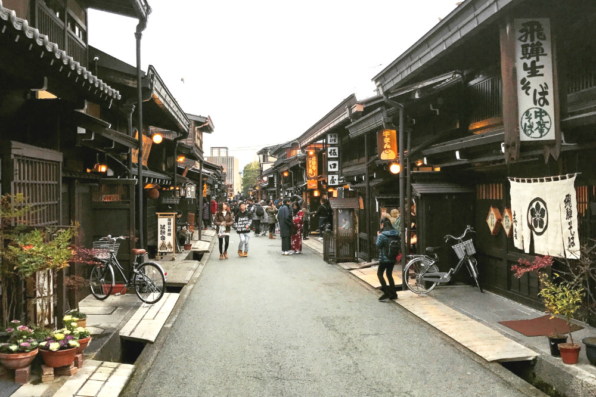
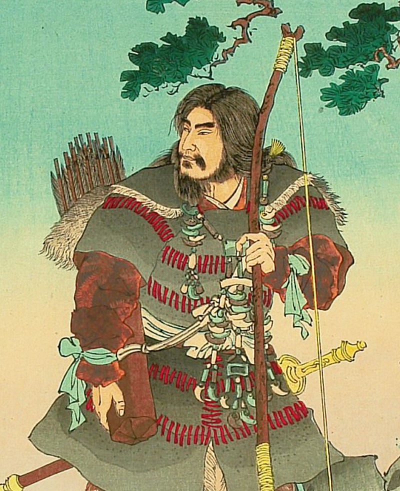
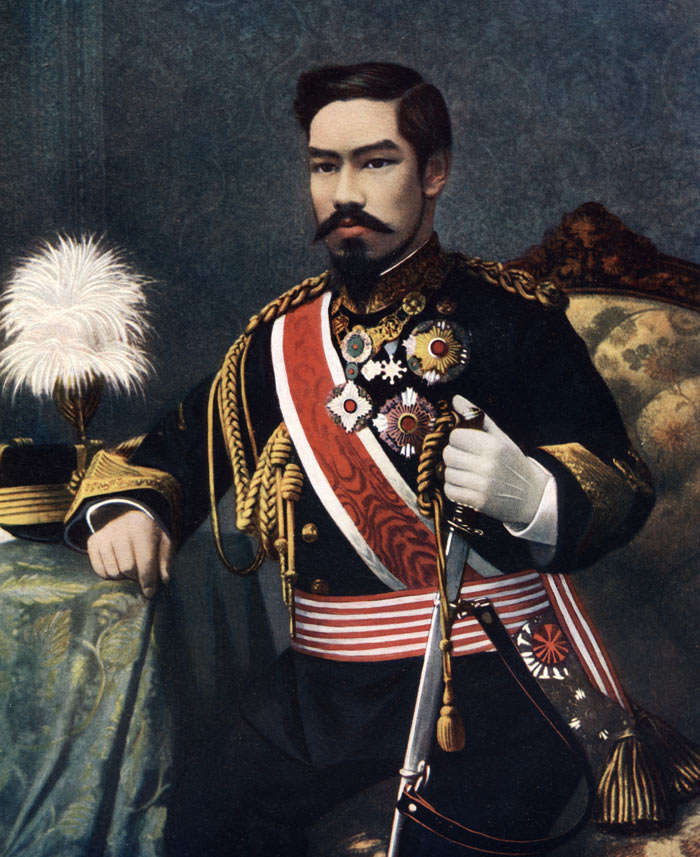

Japan

Japan |
|
Home | Curiosidades | Turismo |
|---|
História do Japão |
|  |
|
As origens da civilização japonesa são remotas e bastante imprecisas. Contudo, alguns estudos indicam que os primeiros ocupantes deste território apareceram no século III a.C.. Entre as várias culturas que surgem nesse período de formação, podemos destacar a existência dos Yayoi, Kyushu e Jomon. De acordo com algumas pesquisas, as mais remotas civilizações teriam chegado da Sibéria durante o período neolítico. O processo de unificação política do Japão teria acontecido ao longo da dinastia Yamato, que configurou a presença de um Estado centralizado. Contudo, ao atingirmos o século VI, a existência do poder real foi paulatinamente perdendo espaço para o poder exercido pelos chefes locais. Após a chamada Guerra Onin, o poder central perdeu espaço para os senhores de terra locais que guerreavam constantemente entre si. |

|
|
No século VII, os conflitos e disputas locais perderam espaço para a rearticulação da dinastia Yamato, que conseguiu promover mudanças que recuperaram o governo monárquico. Após algumas disputas, a monarquia japonesa se tornou praticamente hegemônica durante uma fase de aproximadamente mil anos. Nesse tempo, vale destacar a ascensão dos samurais enquanto importantes agentes militares e políticos. No século XVI, o contato com os comerciantes espanhóis e portugueses determinou o gradual processo de abertura da civilização japonesa ao mundo ocidental. A ação de mercadores e clérigos jesuítas marcou um primeiro momento das transformações culturais que ganharam espaço no Japão. No século XIX, a ação imperialista norte-americana foi peça chave fundamental para a abertura do povo nipônico ao Ocidente. |
|
Com a abertura econômica forçada pela esquadra militar dos EUA, os japoneses entraram em contato com novas ideologias políticas. Em pouco tempo, um forte movimento nacionalista reivindicou a modernização das instituições do país e o fim da influência estrangeira no território. A partir de 1868, a chamada Revolução Meiji ordenou a industrialização japonesa e a extinção das antigas instituições medievalescas. |

|
|
Curiosamente, em um curto espaço de tempo, os japoneses abandonaram a posição de nação subordinada ao imperialismo para se transformar em uma potência industrial promotora de tal política dominadora. O auge dessa nova situação aparece nas primeiras décadas do século XX, quando o governo japonês se envolveu nos conflitos da Primeira e da Segunda Guerra Mundial. No fim da Segunda Guerra, temendo a ascensão de uma potência socialista vizinha, os EUA promovem o lançamento das bombas de Hiroshima e Nagasaki. Esta tragédia nuclear acabou simbolizando a reconstrução da nação japonesa, que não tinha recursos para se recuperar das terríveis perdas econômicas e humanas do conflito. Na década de 1970, acabou se reerguendo e ocupando um importante papel na economia mundial. Atualmente, os japoneses são sistematicamente associados ao desenvolvimento de tecnologia de ponta que marca o capitalismo. Os campos de informática, robótica, telecomunicações, automobilismo são os mais significativos alvos que atestam a posição de vanguarda nipônica. Vez ou outra, os meios de comunicação divulgam mais um invento ou descoberta proveniente dos laboratórios japoneses. |